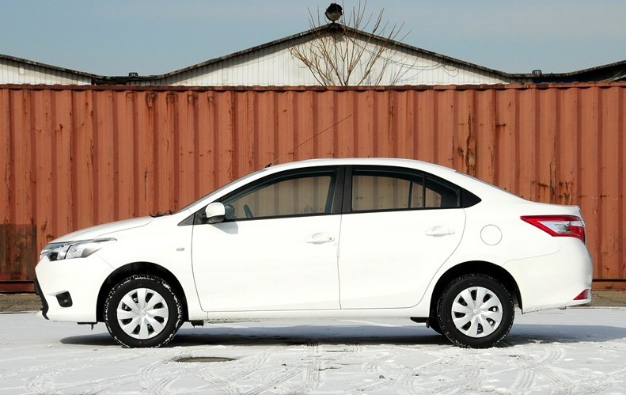

-
汽车召回
-
沃尔沃XC60/S60L /浙江豪情汽车 /12-31 国家质检总局
 赞（11） -
凯迪拉克-雷德 /上海通用 /12-26 国家质检总局
赞（23） -
大切诺基（进口） /克莱斯勒（中国） /12-26 国家质检总局
赞（19）
 最热问题榜 》 》 》
最热问题榜 》 》 》 吐槽最多的车 》 》 》
吐槽最多的车 》 》 》 优质车榜 》 》 》
优质车榜 》 》 》- 12-30日产天籁既抖又振变拖拉机 经销商称正常
- 12-28江淮瑞风S5 十大缺陷问题困扰众多车主
- 12-27路虎海外口碑 动力故障/发动机冷却问题
- 12-25菲亚特菲翔变速箱被集体投诉
- 12-20突然失控,福特翼虎召回后再现“断轴门”
- 查看更多 》
缺陷调查
- 12-31浙江豪情汽车召回国产沃尔沃XC60/S60L
- 12-31燃油泵问题影响多家汽车生产者实施召回
- 12-26上海通用召回部分进口凯迪拉克凯雷德车
- 12-26克莱斯勒（中国）召回部分进口大切诺基
- 查看更多 》